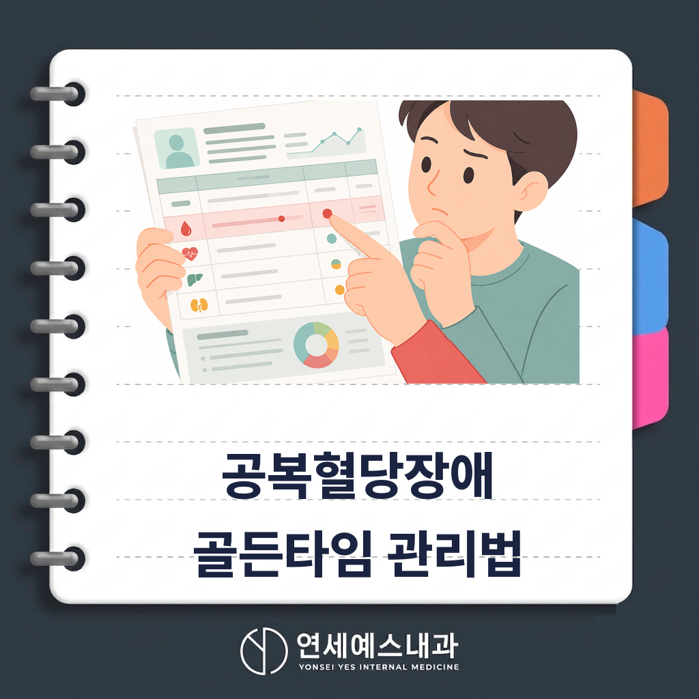
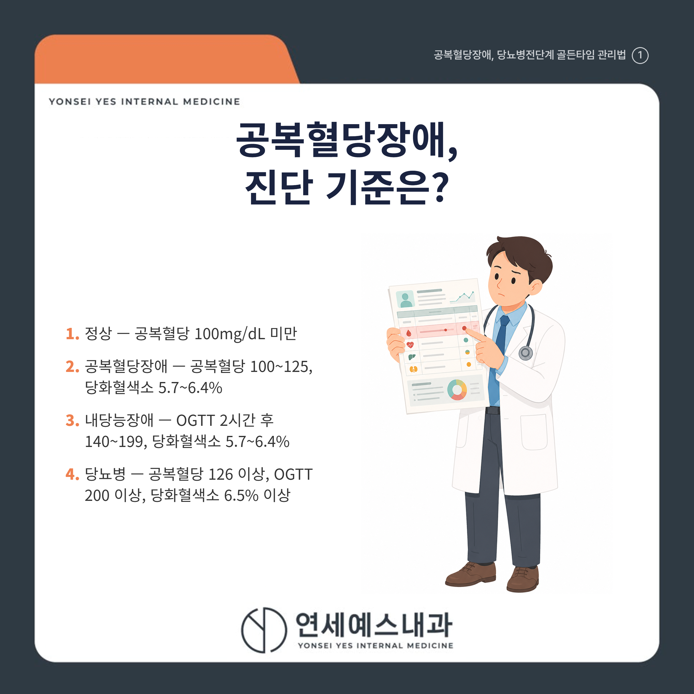
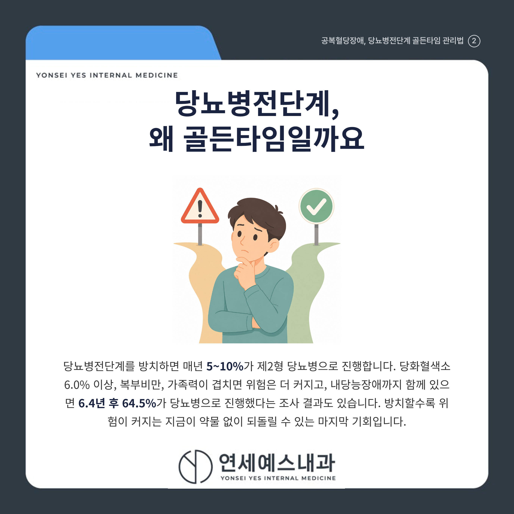
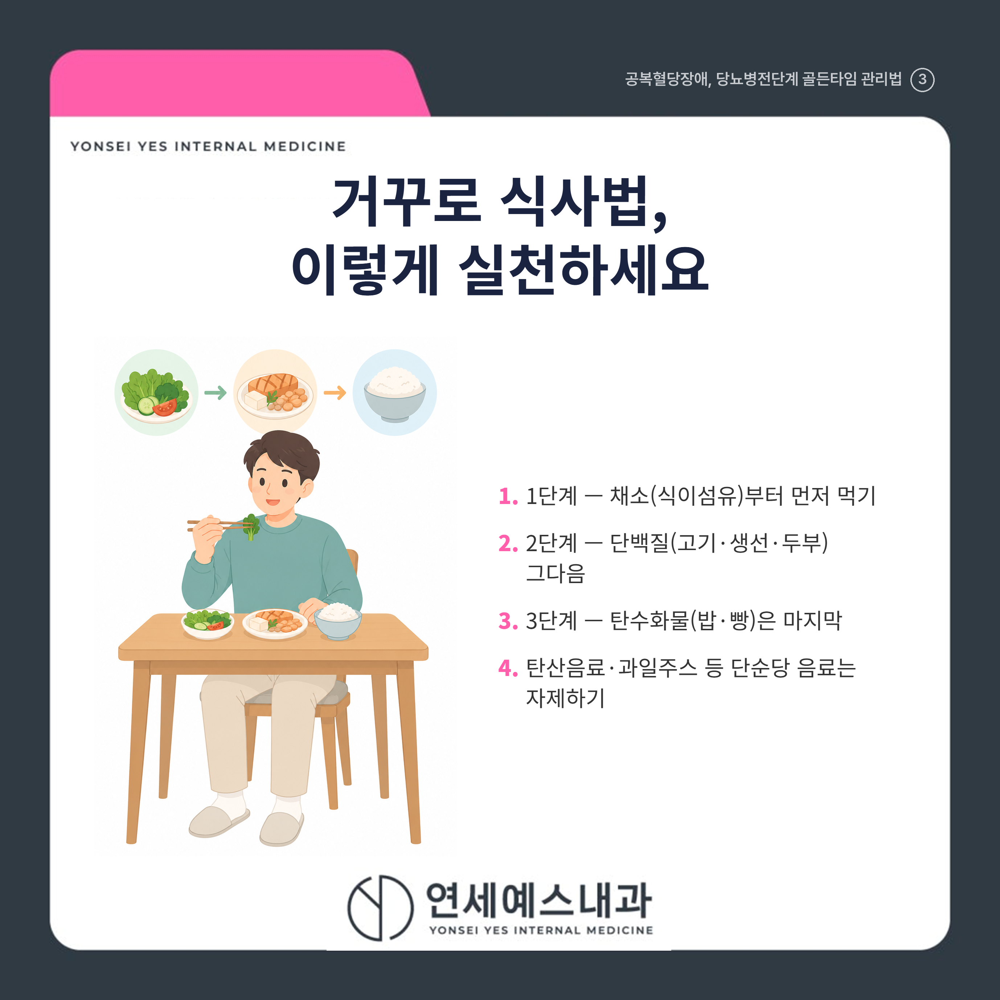
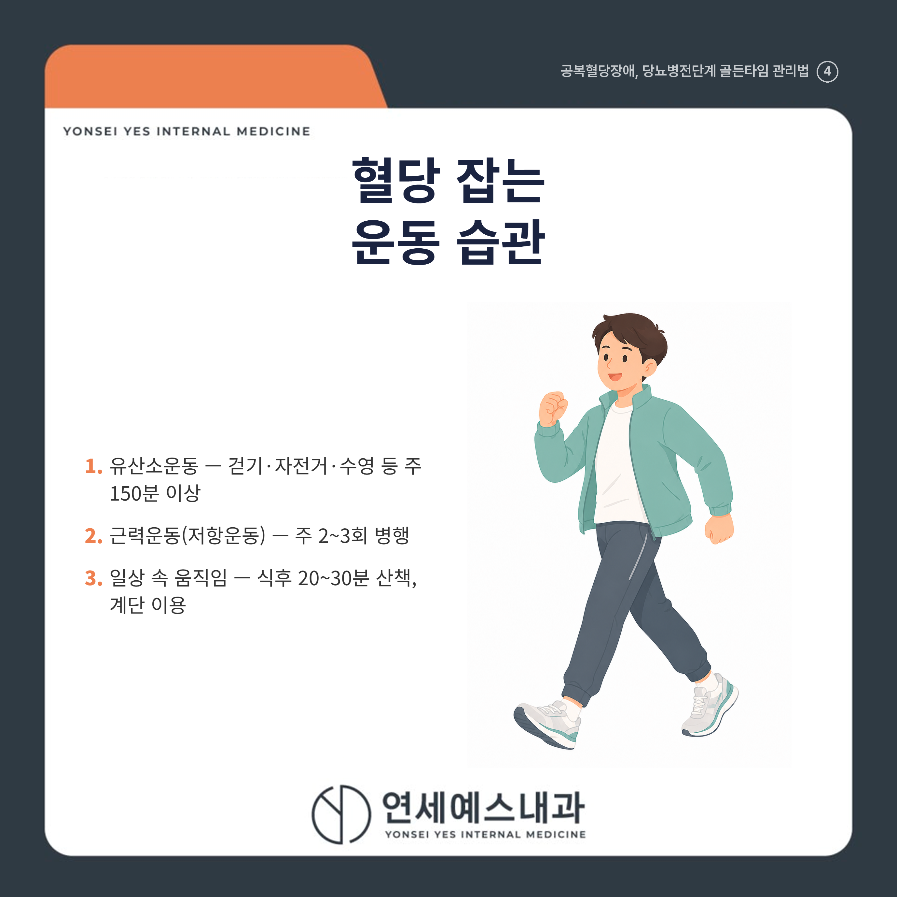
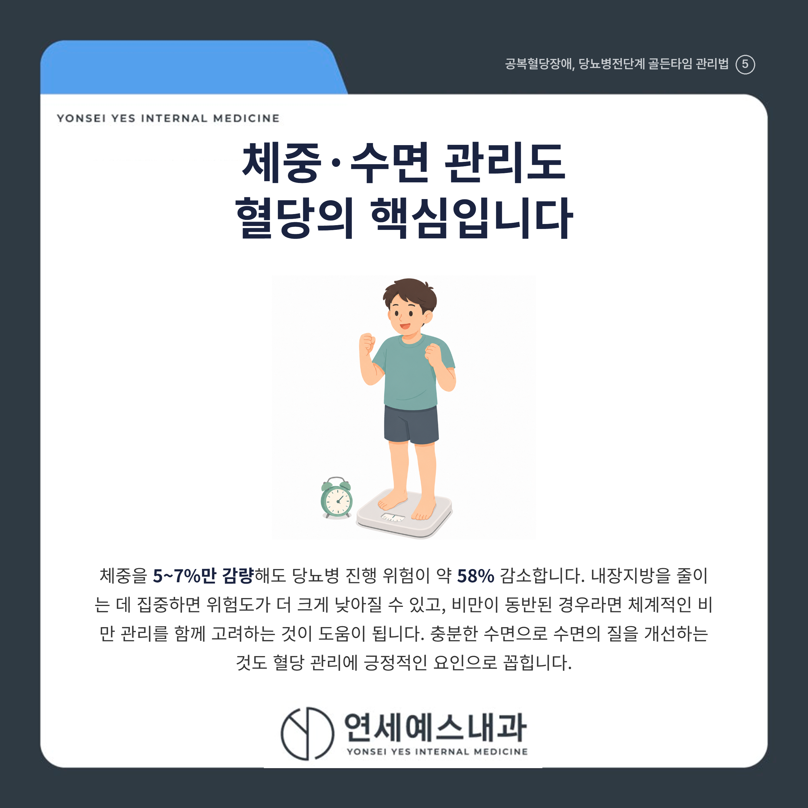

[주안동초음파내과연세예스내과]공복혈당장애, 당뇨병전단계 골든타임 관리법

안녕하세요! 여러분의 건강 주치의 연세예스내과입니다. 😊
무더위가 한창인 요즘, 여름철 건강검진을 받고 오신 분들 많으시죠? 검사 결과표에서 평소보다 살짝 높은 공복혈당 수치를 발견하고 마음 한구석이 무거워지신 분도 계실 것 같습니다.
그런데 "숫자가 조금 높다고 해도 당뇨병은 아니잖아, 괜찮겠지" 라고 생각하며 결과표를 서랍 속에 넣어두신 적 없으신가요? 공복혈당장애는 아직 당뇨병은 아니지만, 정상 혈당도 아닌 애매한 경계 상태라 자칫 방치하기 쉽습니다.
오늘은 공복혈당장애, 즉 당뇨병전단계가 정확히 무엇이고 왜 '골든타임'이라 불리는지, 그리고 생활 속에서 어떻게 관리할 수 있는지 자세히 알려드리려고 합니다.
1. 🩺 공복혈당장애란 무엇인가요?

공복혈당장애(impaired fasting glucose)란 8시간 이상 금식한 뒤 측정한 공복혈당이 100~125 mg/dL인 상태를 말합니다. 정식 당뇨병 진단 기준인 126 mg/dL에는 못 미치지만, 정상 수치인 100 mg/dL 미만도 아닌 경계 구간이죠.
이런 상태를 흔히 '당뇨병전단계'라 부르며, 공복혈당장애 외에도 내당능장애(경구당부하검사 2시간 후 140~199 mg/dL), 당화혈색소(HbA1c) 5.7~6.4% 중 하나만 해당해도 당뇨병전단계로 분류됩니다.
| 구분 | 공복혈당 | OGTT 2시간 후 | 당화혈색소 |
|---|---|---|---|
| 정상 | 100 미만 | 140 미만 | - |
| 공복혈당장애 | 100~125 | - | 5.7~6.4% |
| 내당능장애 | - | 140~199 | 5.7~6.4% |
| 당뇨병 | 126 이상 | 200 이상 | 6.5% 이상 |
국내 30세 이상 성인의 41.1%, 65세 이상은 47.7%가 당뇨병전단계에 해당할 만큼 매우 흔한 상태이며, 별다른 증상이 없어 건강검진에서 우연히 발견되는 경우가 대부분입니다.
2. ⏳ 방치하면 위험한 이유, '골든타임'

공복혈당장애를 가볍게 넘기면 안 되는 이유는 당뇨병으로 진행할 수 있다는 점 때문입니다. 국제 학술 문헌은 당뇨병전단계에서 제2형 당뇨병으로 진행하는 비율을 연간 약 5~10%(자료에 따라 최대 18%)로 보고합니다.
당화혈색소 6.0% 이상, 복부비만, 당뇨병 가족력 같은 위험 인자가 겹치면 진행 위험은 더 높아집니다. 대한당뇨병학회 자료에서는 내당능장애 방치 시 7.5년 후 34%가, 공복혈당장애와 내당능장애를 함께 가진 경우 6.4년 후 64.5%가 당뇨병으로 진행했다는 결과도 확인됩니다.
두 수치가 다르게 느껴지실 수 있지만, '연간 발생률'과 '수년간 누적 진행률'이라는 계산 방식과 위험 인자 동반 여부의 차이일 뿐, 방치할수록 진행 위험이 커진다는 사실은 동일합니다. 그래서 전문가들은 이 단계를 약물 없이 정상 혈당으로 되돌릴 수 있는 마지막 기회, '골든타임'이라 부릅니다.
3. 🥗 식습관 교정으로 혈당 관리하기

다행히 공복혈당장애는 생활습관 교정만으로 정상 혈당으로 되돌릴 수 있는 단계입니다. 가장 쉬운 방법은 이른바 '거꾸로 식사법'입니다. 채소(식이섬유) → 단백질(고기·생선·두부) → 탄수화물(밥·빵) 순서로 먹으면 식후 혈당이 완만하게 오릅니다.
20분 이상 천천히 먹기, 흰쌀밥·흰빵 대신 잡곡밥·현미밥 선택, 탄산음료·과일주스 같은 단순당 음료 자제도 함께 실천하면 좋습니다. 채소·통곡물·불포화지방 중심의 지중해식 식단도 참고할 만합니다.
4. 🏃 운동으로 혈당 관리하기

대한당뇨병학회는 걷기·자전거·수영 같은 유산소운동과 저항운동(근력운동)을 함께 할 것을 권고합니다. 중강도 유산소운동은 주 150분 이상, 근력운동은 주 2~3회 병행하는 것이 좋습니다.
거창한 운동이 아니어도 괜찮습니다. 식후 20~30분 뒤 가볍게 산책하거나 계단을 이용하는 일상 속 움직임도 식후 혈당 관리에 도움이 됩니다. 조금씩이라도 꾸준히 몸을 움직이는 습관이 핵심입니다.
5. ⚖️ 체중·수면 등 나머지 생활습관

식이·운동 못지않게 중요한 것이 체중 관리입니다. 체중을 5~7%만 감량해도 당뇨병 진행 위험이 약 58% 감소하며, 내장지방을 줄이는 데 집중하면 위험도가 더 큰 폭으로 낮아질 수 있습니다.
비만이 동반된 경우라면 필요에 따라 비만 관리를 함께 고려하는 것이 도움이 됩니다. 충분한 수면으로 수면의 질을 개선하는 것도 혈당 관리에 긍정적인 요인으로 꼽힙니다.
Q. 검진은 얼마나 자주 받아야 하나요?
국내 국가건강검진은 만 40세 이상을 대상으로 원칙적으로 2년에 1회(비사무직은 매년) 시행되며 공복혈당 검사가 포함됩니다. 미국당뇨병학회(ADA)는 만 35세부터 선별검사를 시작해, 결과가 정상이면 최소 3년 간격, 당뇨병전단계로 확인됐다면 매년 재검사를 권고합니다.
한 번 공복혈당장애 판정을 받았다면 다음 건강검진까지 기다리지 말고, 매년 공복혈당을 확인하는 것이 안전합니다.
✅ 공복혈당장애 관리 체크리스트
아래 항목 중 지키지 못하고 있는 것이 있다면 오늘부터 하나씩 실천해 보세요.
[ ] 채소 → 단백질 → 탄수화물 순서로 식사하고 있다
[ ] 흰쌀밥·흰빵 대신 잡곡밥·현미밥을 선택하고 있다
[ ] 주 150분 이상 유산소운동, 주 2~3회 근력운동을 하고 있다
[ ] 식후 20~30분 가벼운 산책이나 계단 이용을 실천하고 있다
[ ] 체중의 5~7% 감량을 목표로 관리하고 있다
"공복혈당장애는 병이 아니라, 병을 막을 수 있는 마지막 기회입니다."
공복혈당장애는 아직 당뇨병이 아닙니다. 하지만 방치하면 당뇨병으로 이어질 수 있고, 반대로 식습관과 운동을 조금만 바꾸면 정상 혈당으로 되돌릴 수 있는 단계이기도 합니다. 건강검진 결과표에서 공복혈당 수치가 100을 넘었다면, 가까운 내과를 방문해 정확한 검사와 상담을 받아보시기 바랍니다.
※ 모든 치료 및 예방접종은 개인의 상태에 따라 발열, 통증, 알레르기 반응 등의 부작용이 나타날 수 있으므로, 반드시 의료진과 충분한 상담 후 진행하시기 바랍니다.
연세예스내과에서 전해드리는 건강 정보였습니다. 오늘도 건강하고 평안한 하루 보내세요!


#공복혈당장애 #당뇨병전단계 #혈당관리 #주안내과의원 #주안역내과 #주안역의원 #주안역내과의원 #시민공원역내과 #시민공원역의원 #시민공원역내과의원